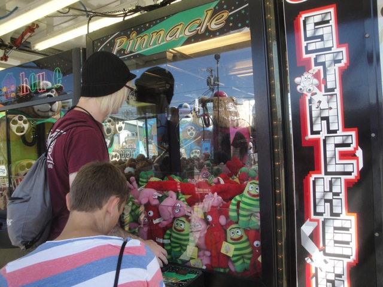

| |
Palace Playland Review

Palace Playland is a fun little amusement park. It's not a theme park that gets talked about often since there's not much here other than a couple credits. So most enthusiasts will generally just see this as a credit whoring stop and then leave. And yeah, as far as roller coasters go, Palace Playland is a very bland park, only offering a Galaxi. Yawn. However, I really enjoyed Palace Playland. Sure, the rides may not be anything special, but that's not what made me enjoy the park so much. I just really enjoy the atmosphere. I love its beach setting, I love how well it seemed to blend in with Old Orchard Beach. This seemed like a total date place. The kind of place I wanna go unicycling in and just relax. Because while I have no real urge to get back to the actual park, Palace Playland, which pretty much is just a credit whoring stop, I really enjoyed Old Orchard Beach and would love to go back and just relax here, eat at some of the fine resteraunts, and just enjoy the beach in more depth than I was able to last time I visited.
Rollercoasters
There is a link to a review of all the Rollercoasters at Palace Playland.
Please keep in mind that there is no review of Sea Viper Dash because it didn't exist when I last visited.
Kiddy Coasters
Orient Express Review

Past Coasters
Galaxi Review

Flat Rides
Here are the reviews of all the Flat Rides at Palace Playland. Now I was only here to credit whore, so I did not get a chance to ride any of the flat rides here. However, for a small park, they seem to have a decent collection. They have a Power Surge, which may be a fairly common flat ride in the United States, but these things are really fun rides. They also have a kiddy drop tower, a frisbee, a pirate ship, some chairswings, a tilt a whirl, a troika, bumper cars, a ferris wheel, and a carousel. So if you're gonna really explore the park, check out their Power Surge.
 These rides are awesome. =)
These rides are awesome. =)
Water Rides
The only water ride at Palace Playland is the standard RCT Log Flume that you find at fairs and very carnival-like amusement parks, which Palace Playland totally is. I'd really recommend just swimming in the ocean to cool off.
Dining
I did not eat at Palace Playland. However, my assumptions is that the food in the park is mediocre. Fear not however. You will not starve because while I'm pretty sure that the food at Palace Playland sucks, you're on a very touristy beach. And there are plenty of good resteraunts nearby. Knowing Maine and looking around, there are a lot of seafood resteraunts by the beach and looking at Trip Advisor, there seems to be a wide variety of cuisines in Old Orchard Beach, so you have lots of options.
Theming and Other Attractions
Here are the reviews of all the other stuff at Palace Playland. For theming, just look at the ocean and the beach. That's all the theming you need. Cause other than that, the park is literally just slapped on asphalt. As for other stuff, they have an arcade and lots of carnival games. But not much else.

Worried about having too much money. Have no fear. You can waste that money very easily over here. =)
In Conclusion
While Palace Playland is not an amazing amusement park by any means, it's not meant to be. It is mostly just a fun place to go and enjoy the day as there are a few fun rides and enjoy Old Orchard Beach. And if you're a fan of beaches, you'll love the beach next to Palace Playland. It's just a really nice and relaxing beach. So yeah. You'll have fun at Palace Playland.
Enthusiast FAQs.
*Are there kiddy coaster restrictions? - No. There are no restrictions for Orient Express. It's even listed as an adult ride for some strange reason on the park's website.

Tips
*Get a wristband if you plan on riding everything.
*Get all the credits
*Check out Old Orchard Beach. It seems like a nice place.
*Have Fun!!!
Theme Park Category:
Straddles the line between Piers & Boardwalks and Small Park
Location
Old Orchard Beach, Maine, USA
Last Day Visited
July 31, 2011
Video
I do not have enough footage for a Palace Playland video. There's really no need for a video of a park this small, but it's not impossible to say that this park will ever get a video of its own.
Complete Update List
2011
TPR's Northeast Trip
Here's a link to the parks website.
Home
|